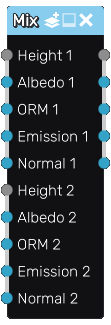

Mix node
The Mix node mixes two applied maps based on the height information.
Inputs
The Mix node accepts the height, albedo, ORM, emission and normal channels of both applied maps as inputs.
Outputs
The Mix node outputs the height, albedo, ORM, emission and normal components of the combined map.
Parameters
The Mix node does not have any parameter.